A cidade de Itapecerica promoveu, ao longo do mês de abril, a Semana Nacional da
Conscientização do Autismo, uma campanha dedicada à informação, inclusão e valorização
das pessoas autistas e de suas famílias. A programação contou com palestras, ações
educativas, exposições, atividades de sensibilização social e eventos comunitários
voltados à conscientização da população sobre o Transtorno do Espectro Autista (TEA). A
abertura da campanha aconteceu no dia 1º de abril, com um ato simbólico de iluminação
dos prédios da Prefeitura e da Câmara Municipal nas cores azul, amarelo e vermelho,
reunindo famílias, crianças, adultos autistas e membros da comunidade em um momento de
acolhimento e representatividade. Durante toda a programação, temas importantes como
inclusão escolar, saúde mental, autonomia, direitos da pessoa com deficiência e inclusão
no comércio foram abordados por profissionais, especialistas e representantes de
instituições parceiras. As atividades também incluem blitz educativa no centro da cidade
e um evento de encerramento voltado às famílias e à comunidade. A campanha foi elaborada
pela AMAr e pelo Instituto Casa de Luiza, contando com o apoio e realização da
Prefeitura Municipal de Itapecerica. A iniciativa reforça a importância da empatia, do
respeito às diferenças e da construção de uma sociedade mais inclusiva para todos.
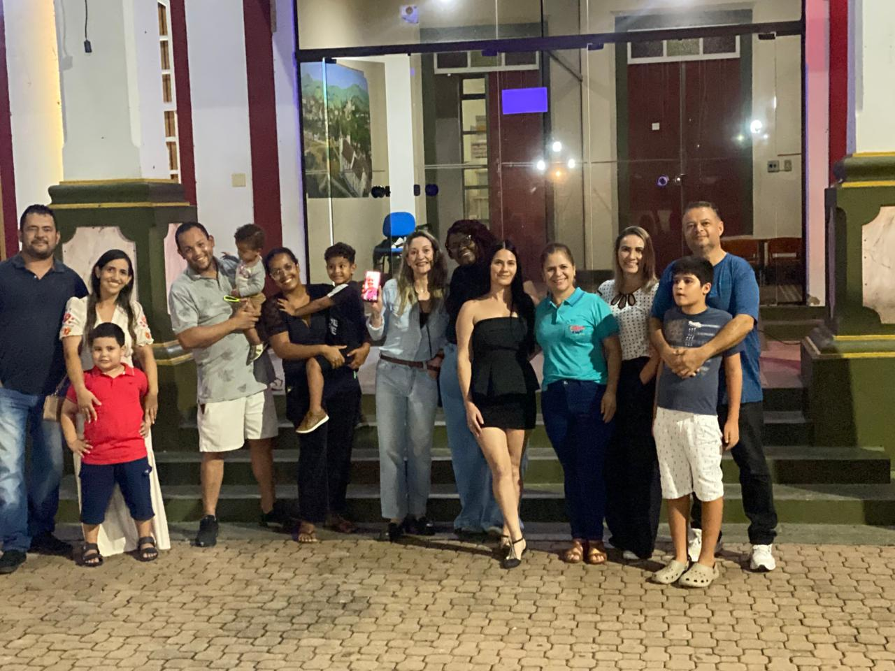
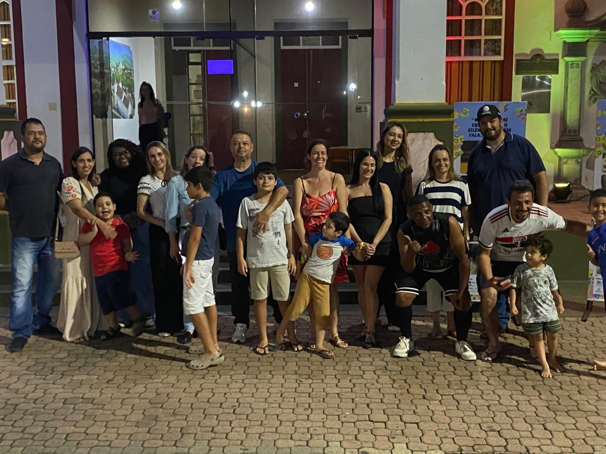
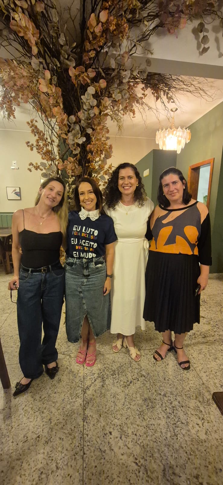
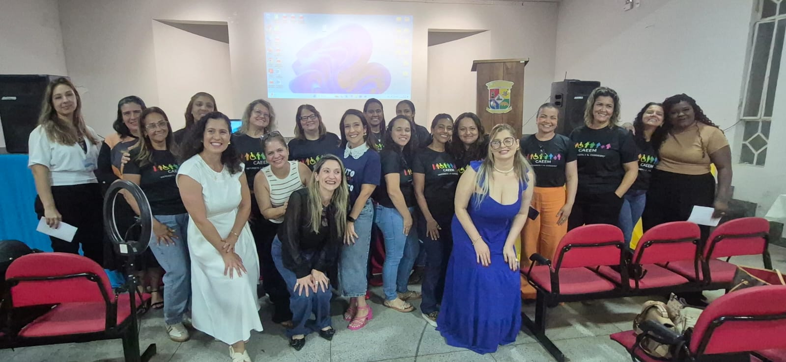
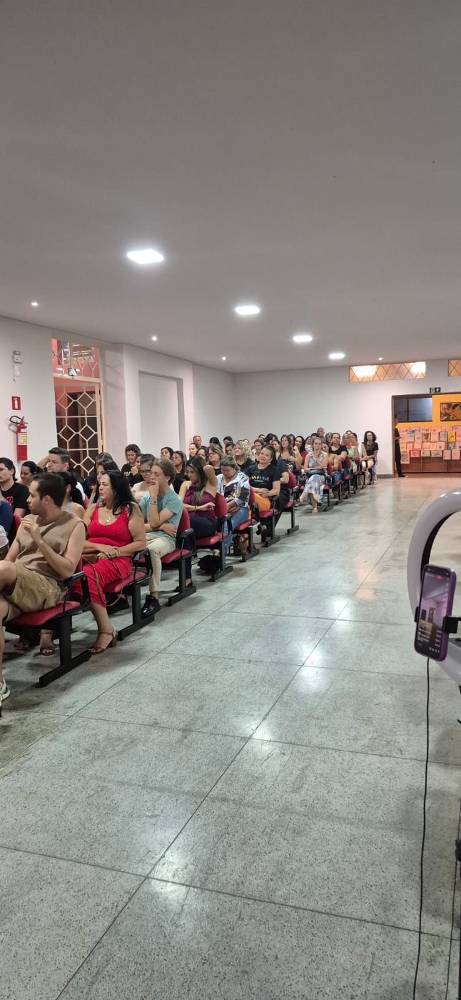
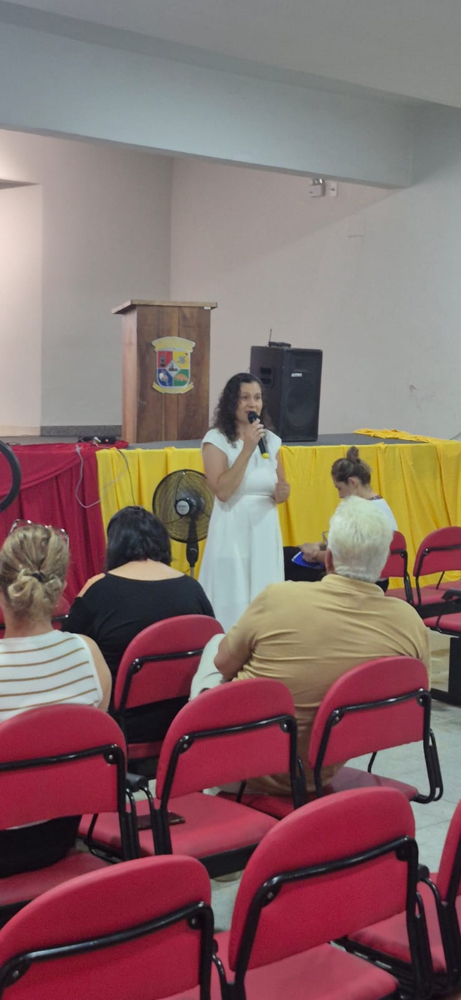
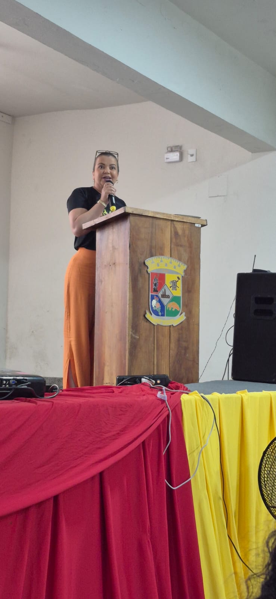
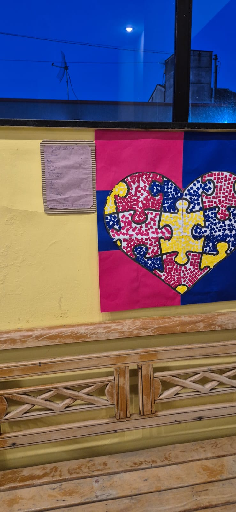
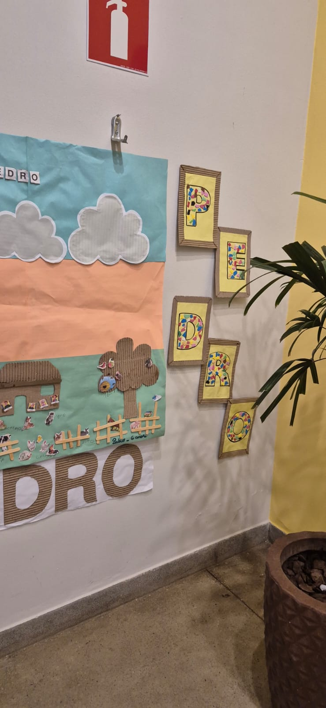
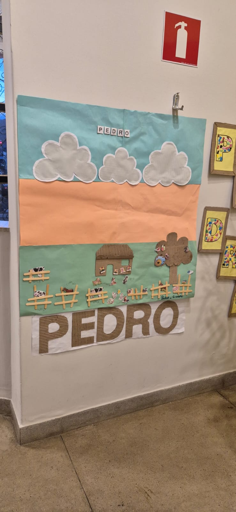
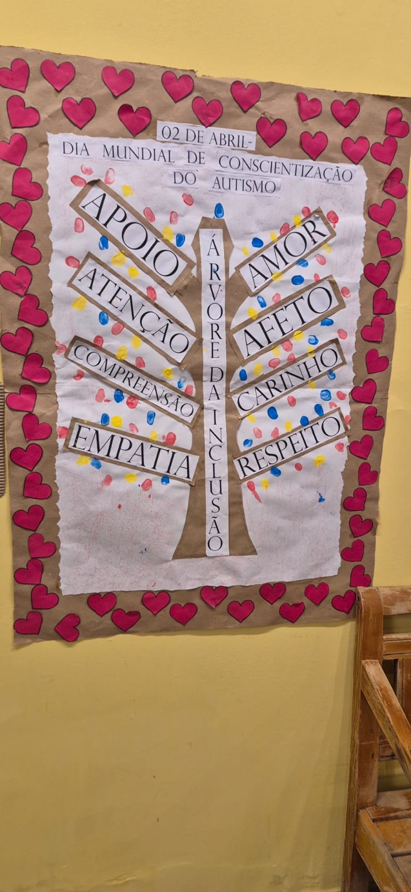
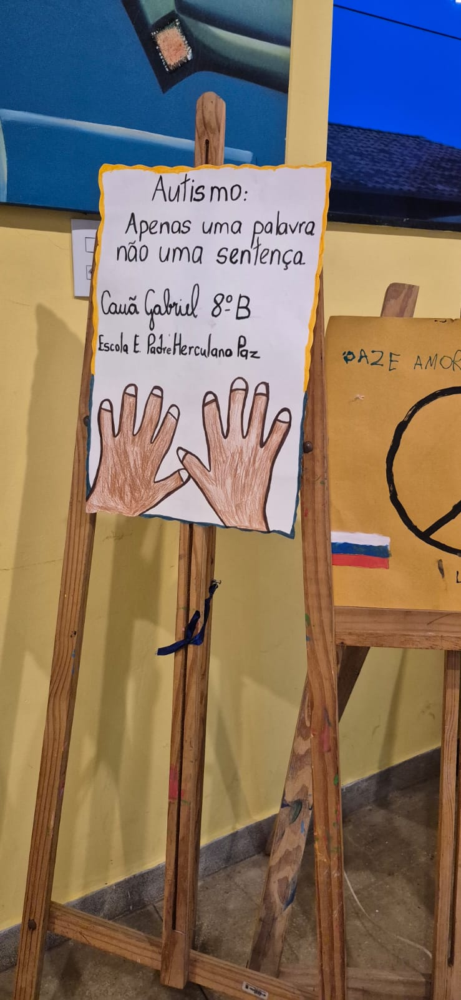
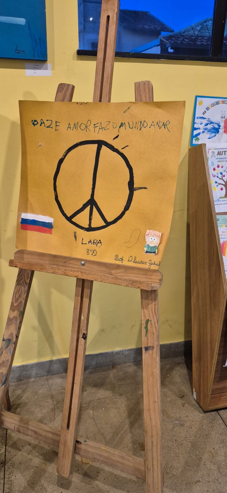
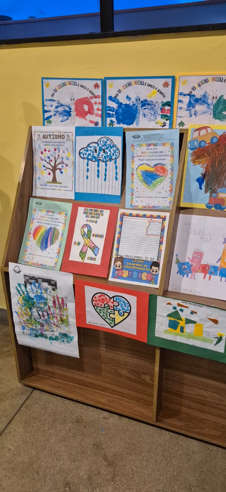
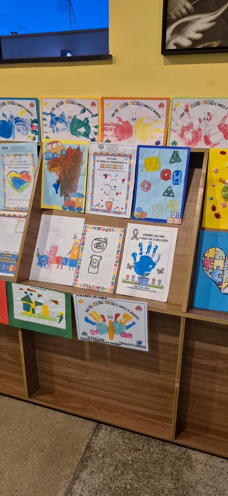
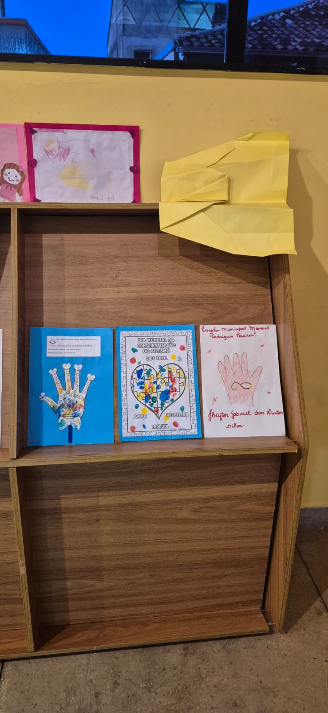
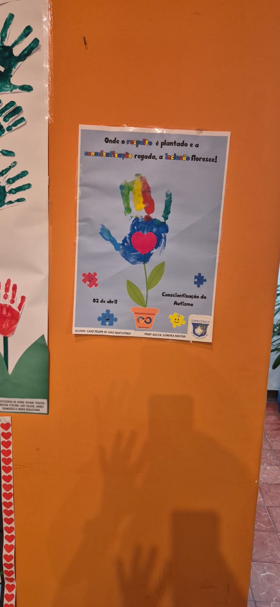
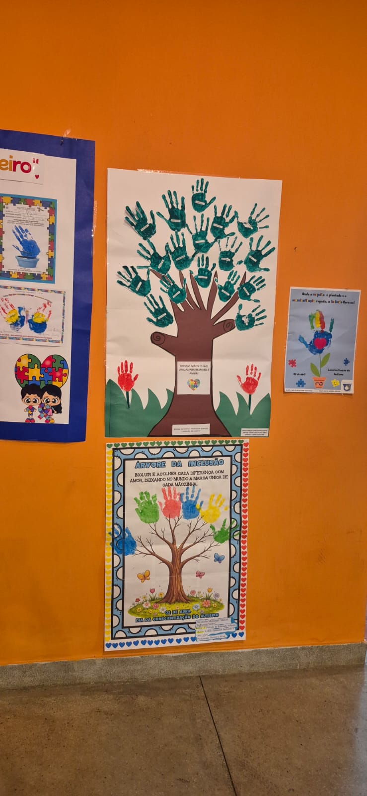
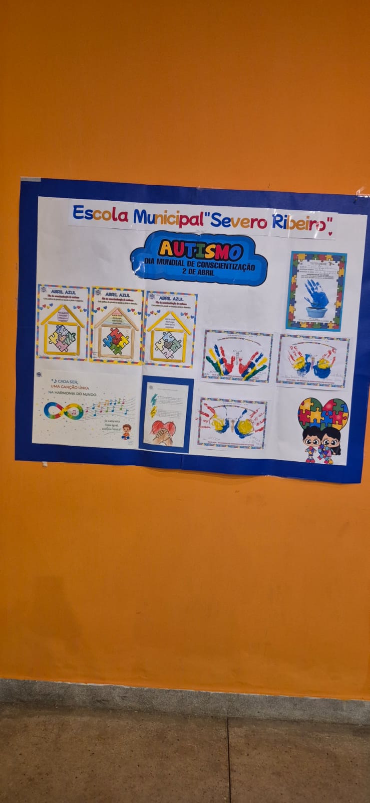
No dia 1º de abril, a cidade de Itapecerica deu início à Semana de Conscientização do
Autismo com um emocionante ato simbólico de iluminação do prédio da Prefeitura
Municipal. A ação reuniu pais, crianças, jovens e adultos autistas em um momento marcado
pela união, respeito e fortalecimento da causa. O evento teve como principal objetivo
ampliar a conscientização da população sobre o Transtorno do Espectro Autista (TEA),
promovendo mais inclusão, empatia e acolhimento para as pessoas autistas e suas
famílias. A iluminação especial do prédio público simbolizou o compromisso da comunidade
com a valorização da diversidade e a construção de uma sociedade mais acessível e
humana. A iniciativa foi realizada por meio da parceria entre a AMAr e a Prefeitura
Municipal de Itapecerica, reforçando a importância de ações que incentivem a informação,
o respeito e a inclusão social durante toda a semana de conscientização.